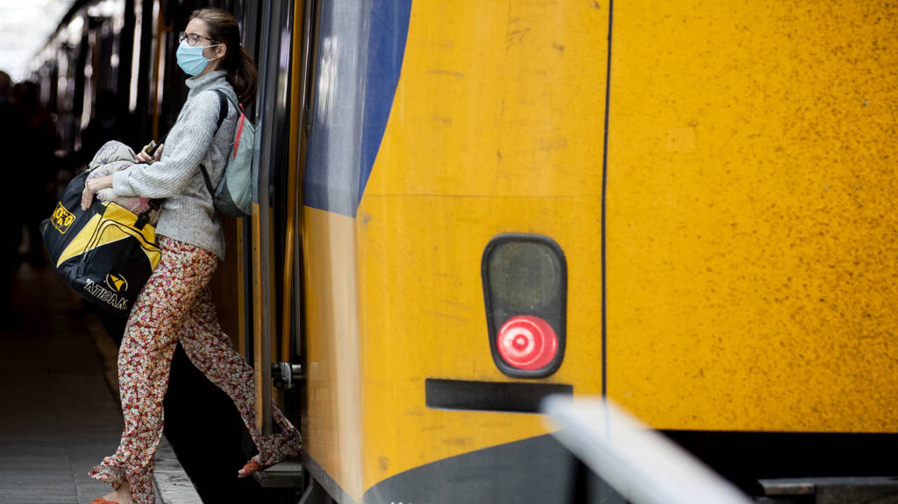
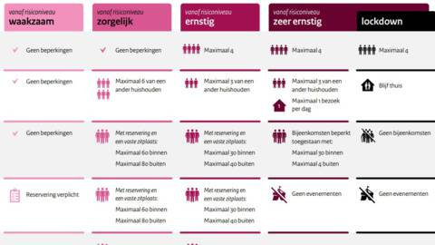
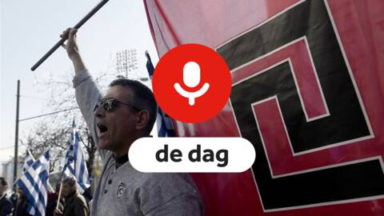

'Meer incidenten in ov door coronaregels, wekelijks 144 keer rond mondkapjes'
NOS Nieuws • Binnenland • wo 7 oktober, 14:45
De openbaarvervoerbedrijven melden wekelijks gemiddeld 144 incidenten die te maken hebben met de mondkapjesplicht. Dat gaat dan om schelden, maar ook om spugen of een zware mishandeling, zegt de voorzitter van brancheorganisatie OV-NL Pedro Peters.
Gisteren werd in Amsterdam een 67-jarige buschauffeur gebeten, geschopt en geslagen door een passagier die weigerde een mondkapje op te zetten. De chauffeur verloor vier tanden en liep onder meer een hersenschudding op. De politie is nog op zoek naar de dader.
Het is niet de eerste keer dat grof geweld is gebruikt na een discussie over een mondkapje, zegt Peters, maar hij benadrukt dat het incidenten zijn. "Als je kijkt naar het aantal reizigers is dit wel een uitzondering, maar we vinden het nog steeds veel te veel. Vorige week is op een andere plek in Nederland de chauffeur van een streekbus in elkaar geslagen. De tanden lagen uit zijn mond en hij ligt nog steeds in het ziekenhuis."
Wekelijks zo'n 275 boetes
Sinds de invoering van de plicht om in het openbaar vervoer een kapje te dragen is het aantal wekelijks gemelde mondkapincidenten vrijwel gelijk gebleven.
Wel is het zo dat het aantal incidenten door de coronaregels is toegenomen in vergelijking met vorig jaar, zegt Peters. "Zeker als je bedenkt dat het aantal reizigers door corona fors lager ligt."
"Twee soorten incidenten zijn toe te schrijven aan de coronaregels", zegt Peters. "Behalve mondkapjes is dat het aantal zwartrijders. Op alle bussen in Nederland moesten mensen aanvankelijk achterin instappen in plaats van voorin. Achterin is er geen sociale controle van de chauffeur en daardoor nam het aantal zwartrijders met zo'n 20 procent toe."
In bus, trein, tram en metro worden op dit moment wekelijks tussen de 250 en 300 boetes uitgeschreven aan mensen die geen mondkapje willen opdoen. Dat zijn er meer dan in juni, toen de mondkapjesplicht in het ov net was ingevoerd.
"In het begin zeiden we: mensen moeten eraan wennen dus we gaan niet meteen handhaven. Nu vinden we dat iedereen eraan gewend moet zijn," zegt Peters.
Handhaven tegen de klippen op
Voor de Vervoerregio in Amsterdam is de mishandeling van de buschauffeur aanleiding om te pleiten voor een algehele mondkapjesplicht in de openbare ruimte. "De voortdurende twijfel die wordt gezaaid over het nut van mondkapjes is een slechte zaak", schrijft de Amsterdamse wethouder Dijksma op Twitter. "Onze mensen handhaven nu tegen de klippen op."
Peters van OV-NL denkt niet dat zo'n algehele mondkapjesplicht de mishandeling van de chauffeur in Amsterdam had kunnen voorkomen. Ook is het volgens hem de vraag of boa's en politie zo'n totale plicht kunnen handhaven.
"Maar duidelijkheid is belangrijk en die wordt er de laatste tijd niet groter op. In het begin had je alleen de mondkapjesplicht in de bus. Op het station geldt een advies om een mondkapje te dragen, het is geen verplichting."
De verplichting werkt goed in het openbaar vervoer, concludeert Peters. "Ruim 90 procent van de mensen reist keurig met een mondkapje."
Verantwoordelijkheid van de reizigers
Het Amsterdamse vervoerbedrijf GVB besteedt bij het opleiden van medewerkers tijd aan hoe ze om moeten gaan met agressieve reizigers. "Na de opleiding worden ze daar regelmatig over bijgeschoold", zegt een woordvoerder. "Het uitgangspunt is altijd om te deëscaleren."
Peters wijst op de verantwoordelijkheid van de reizigers. "De chauffeur is geen handhaver", zegt Peters. "Er rijden 6000 bussen in Nederland, het is onmogelijk om altijd en overal te gaan handhaven. Het is echt de verantwoordelijkheid van de reizigers zelf."
Tip van de redactie
-
Zij merken gevolgen coronamaatregelen meteen, '2020 is een weggegooid jaar'
Dit is de impact van de gedeeltelijke lockdown op het leven van Arjan, Karlijn en Martin.
-
Een overzicht van de vier coronafases met een uitgebreide uitleg per risiconiveau van de fase
Het kabinet heeft een deel van het langetermijnplan voor de coronacrisis bekendgemaakt. Het is een uitleg van de vier verschillende risiconiveaus en de bijbehorende maatregelen.
-
Podcast De Dag: hoe Griekenland afrekende met neonazipartij Gouden Dageraad
De rechtsextremistische partij Gouden Dageraad groeide tijdens de kredietcrisis uit tot de derde grootste partij van Griekenland. Nu is de partij aangemerkt als criminele organisatie en moet de hele partijfractie van toen de gevangenis in.